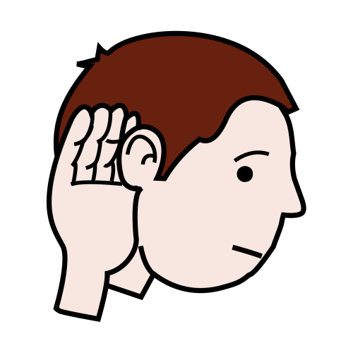
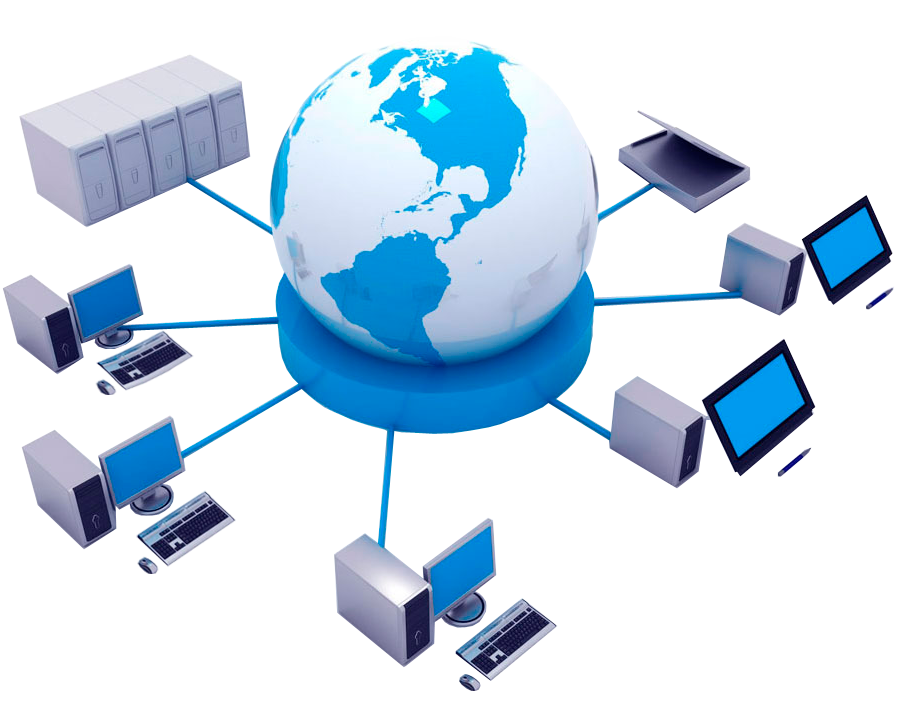
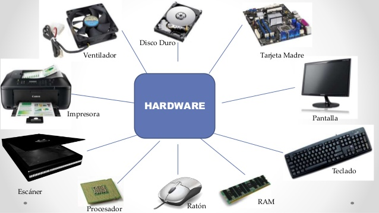
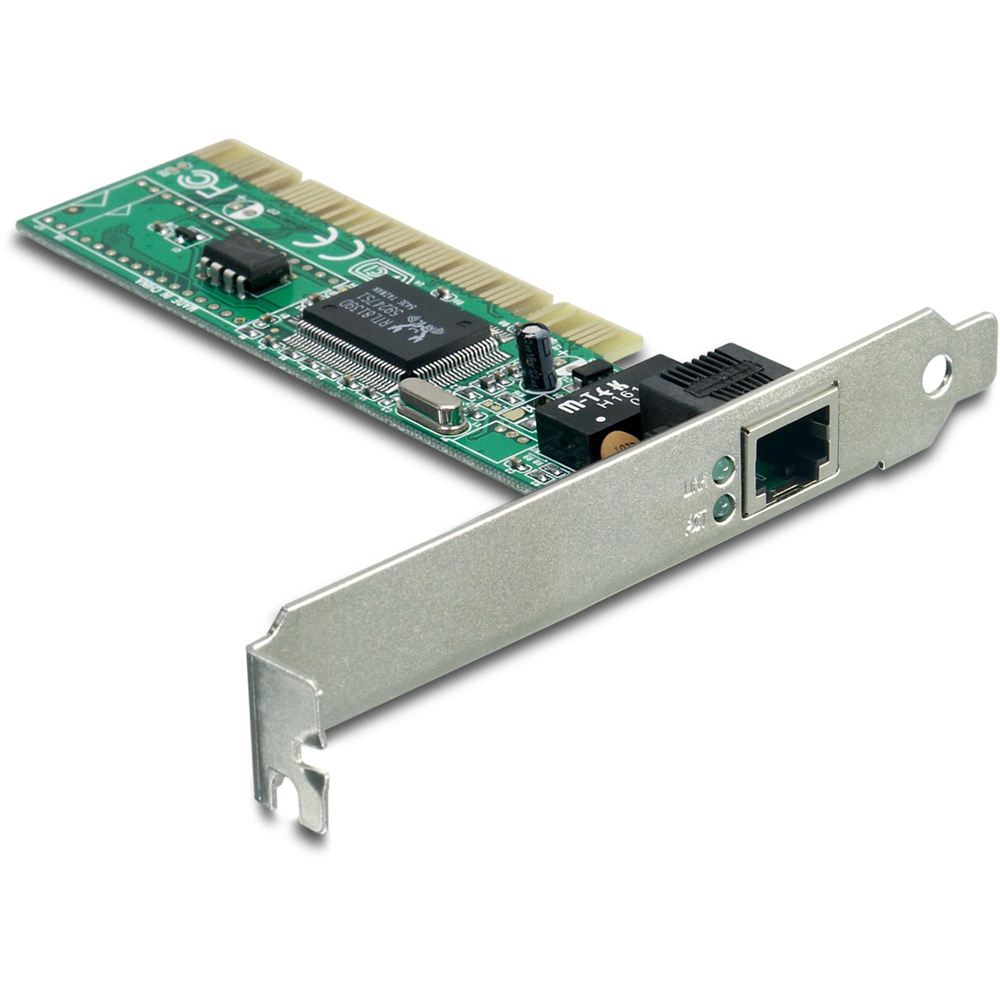
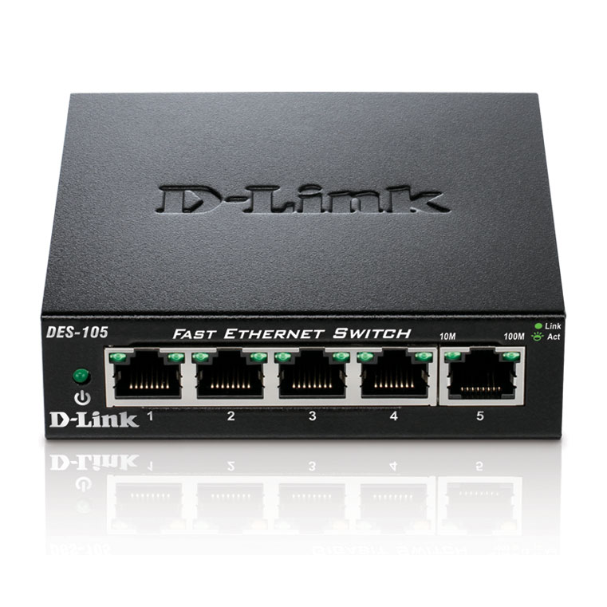
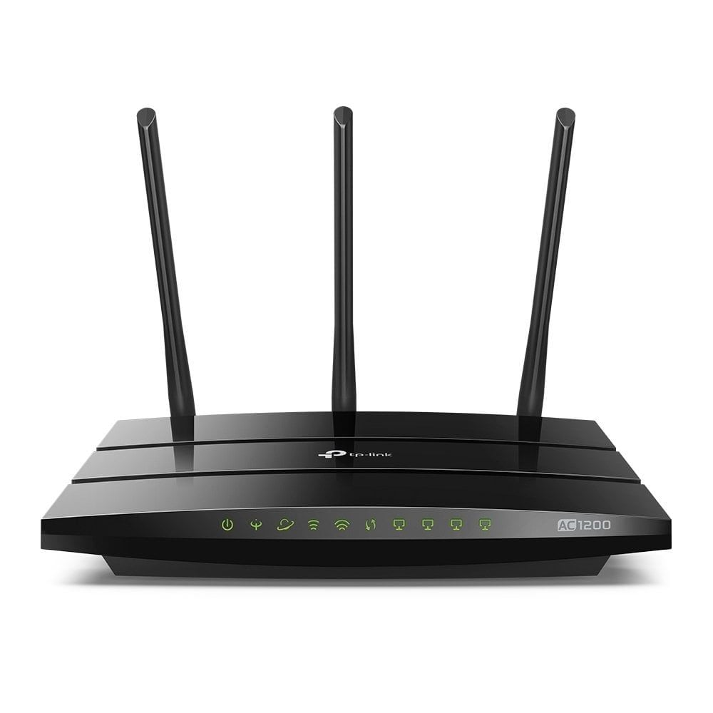
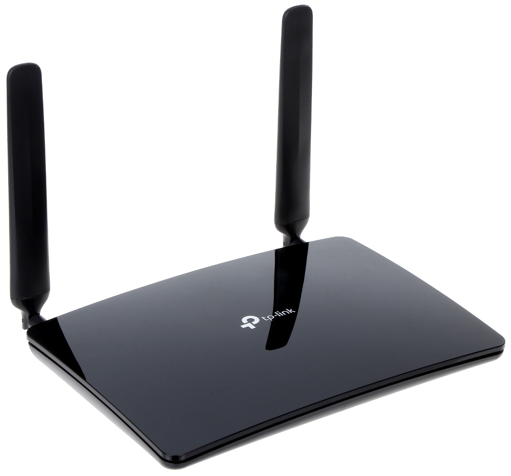
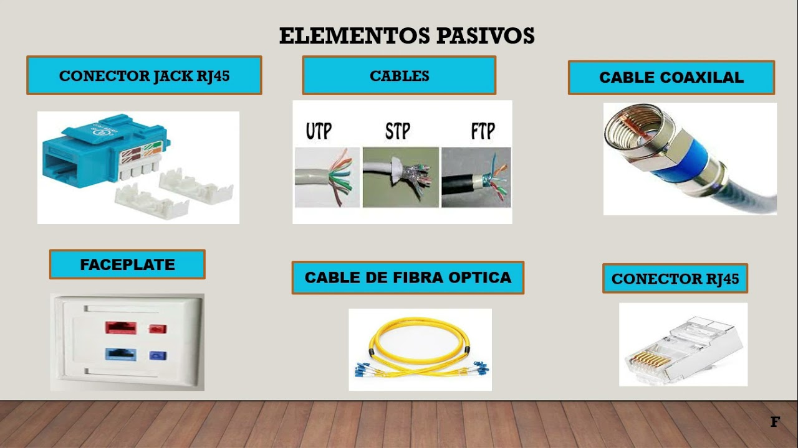
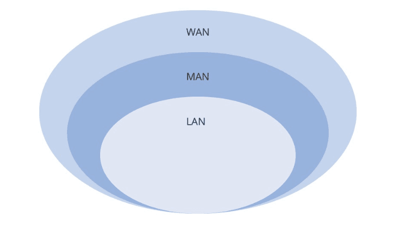
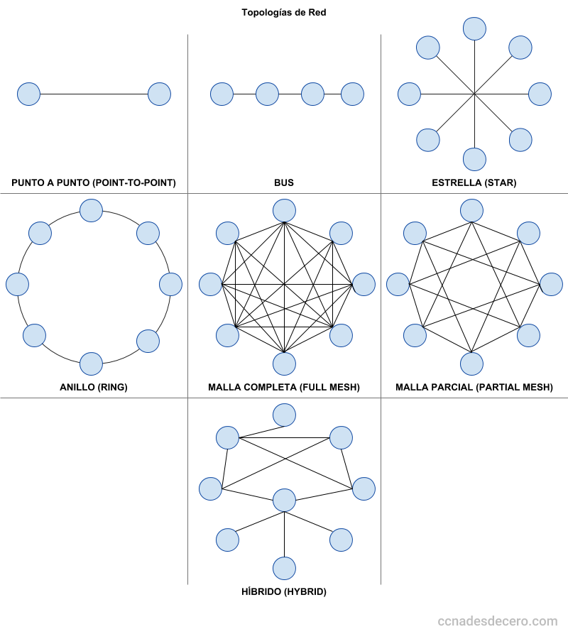

Ampliación de Conceptos de Redes y Comunicación
Unidad 1: Comunicación y Componentes de Red
Definición de comunicación, elementos de la comunicación, emisor, receptor, mensaje y medio.
La comunicación es el proceso fundamental de intercambio de información entre dos o más sujetos, que puede ser verbal o no verbal, oral o escrita. Implica la transmisión de un mensaje desde un emisor hasta un receptor, utilizando un código común y a través de un canal adecuado. Para que sea efectiva, es crucial que el mensaje sea claro y coherente, y que el receptor lo comprenda. La retroalimentación es esencial para cerrar el ciclo de comunicación y asegurar la comprensión.
- Emisor: Es quien inicia el proceso de comunicación, codifica y envía el mensaje. Puede ser una persona, un grupo o una organización.
- Receptor: Es la persona o grupo que recibe, decodifica y comprende el mensaje enviado por el emisor.

- Mensaje: Es la información que el emisor desea transmitir al receptor.
- Canal (Medio): Es el medio físico a través del cual se transmite el mensaje (oral, escrito, visual o digital). Por ejemplo, el aire para la voz o una computadora para un mensaje digital.
- Contexto: Se refiere al entorno donde se produce la comunicación, incluyendo el lugar, el momento, la cultura y las circunstancias que influyen en la interpretación del mensaje.
- Retroalimentación: Es la respuesta del receptor que permite al emisor saber si el mensaje fue comprendido.
- Código: Es el conjunto de signos y reglas que emisor y receptor comparten para construir y comprender el mensaje (idioma, símbolos, etc.).
Definición de red, componentes físicos, hardware, componentes activos, pasivos, medios de transmisión.
Una red informática está constituida por computadoras interconectadas que requieren la participación de diversos elementos para establecer la comunicación y transmitir información.
- Definición de red: Un sistema de computadoras y dispositivos interconectados que comparten recursos y datos.

- Componentes físicos (hardware): Dispositivos y periféricos que permiten la comunicación en red, como tarjetas de red, módems y enrutadores.

- Medios físicos de transmisión: Elementos encargados de la transmisión física de la información, ya sea por cableado o por ondas electromagnéticas.
- Componentes activos: Dispositivos de hardware que trabajan activamente con señales en una red, ya sea para amplificar, modificar o evaluar. Inyectan energía en el circuito.
- Tarjeta de red (NIC - Network Interface Card): Permite a un dispositivo conectarse a una red.

- Hub (concentrador): Dispositivo sencillo que conecta múltiples dispositivos en una red y retransmite los datos a todos los puertos, generando tráfico innecesario.

- Switch (conmutador): Dispositivo más inteligente que un hub, conecta dispositivos y envía los paquetes de datos directamente al destino, mejorando el rendimiento de la red.

- Router (enrutador): Dispositivo de red que conecta dos o más redes diferentes (ej. una LAN a Internet) y determina la mejor ruta para enviar paquetes de datos entre ellas.

- Gateway Modem: Dispositivo que combina las funciones de un módem y un router, permitiendo la conexión a Internet y la creación de una red local.

Unidad 2: Elementos Pasivos y Medios de Transmisión
Los elementos pasivos son componentes que no inyectan energía en la red, sino que facilitan el soporte físico de la misma. Los medios de transmisión son las vías por las cuales se transportan los datos.
Elementos pasivos:
- Cableado: Conjunto de cables utilizados para interconectar los dispositivos de red.
- Jacks, Plug o conector: Componentes utilizados para realizar las conexiones físicas de los cables a los dispositivos o paneles. El RJ45 es un tipo común de conector modular.
- Patch panel (panel de parcheo): Dispositivo con múltiples puertos que sirve como punto central para la terminación y organización del cableado de red, facilitando la gestión y el mantenimiento.
- Racks o gabinetes: Estructuras físicas para organizar y proteger equipos de red como servidores, switches, patch panels, etc.

Medios de transmisión:
- Medios de transmisión guiados: Conducen las ondas a través de un camino físico (cables).
- Cable coaxial: Consiste en un conductor central rodeado por una capa conductora cilíndrica. Es resistente a interferencias y se usa en sistemas troncales o de largo alcance (ej. televisión por cable, Ethernet).
- Fibra óptica: Transmite datos mediante pulsos de luz a través de hilos de vidrio o plástico. Ofrece alta velocidad y ancho de banda en largas distancias, con baja atenuación y resistencia a interferencias electromagnéticas.
- Líneas telefónicas: Utilizadas para la transmisión de datos, aunque generalmente con velocidades menores en comparación con otros medios modernos.
- Cable trenzado (par trenzado): Consiste en pares de hilos de cobre conductores cruzados para reducir el ruido de diafonía.
- UTP (Unshielded Twisted Pair - Par trenzado no apantallado): El tipo más común, sin protección adicional contra interferencias externas.
- STP (Shielded Twisted Pair - Par trenzado apantallado): Incluye una cubierta protectora para reducir las interferencias electromagnéticas, ofreciendo mejores características de transmisión que el UTP, pero es más caro.
- FTP (Foiled Twisted Pair - Par trenzado con lámina): Similar al UTP pero con una lámina de blindaje global alrededor de los pares trenzados.
- Medios de transmisión no guiados: No confinan las señales mediante ningún tipo de cable; las señales se propagan libremente a través del medio (aire, vacío).
- Espectro Wi-Fi: Utiliza ondas de radio en el espectro electromagnético para redes inalámbricas de corto a mediano alcance.
- GSM (Global System for Mobile Communications): Estándar para la comunicación móvil que utiliza ondas de radio.
- Satelital: Utiliza satélites en órbita para la transmisión de señales a largas distancias, ideal para áreas remotas o comunicaciones globales.
- Infrarrojos: Utiliza luz infrarroja para la comunicación inalámbrica de corto alcance y línea de vista, como en controles remotos.
Unidad 3: Funcionamiento y Clasificación de Redes
Las redes informáticas permiten la interconexión de dispositivos para compartir recursos y datos. Se pueden clasificar según varios criterios:
Clasificación de redes por escala/alcance:
- LAN (Local Area Network - Red de Área Local): Redes que conectan dispositivos en un área geográfica limitada, como una casa, oficina o campus. Permiten compartir recursos a alta velocidad.
- MAN (Metropolitan Area Network - Red de Área Metropolitana): Redes que cubren un área geográfica más grande que una LAN, como una ciudad o un área metropolitana. Conectan múltiples LANs.
- WAN (Wide Area Network - Red de Área Amplia): Redes que se extienden sobre una gran área geográfica, conectando múltiples LANs y MANs, incluso a nivel continental o global (ej. Internet). Utilizan servicios de microondas o satelitales.

Topología de red:
Se refiere a la organización interna de los elementos que componen la red, es decir, la estructura organizativa de la red.
- Bus: Un solo cable principal (bus o backbone) al que todos los terminales están conectados. Es simple de instalar, pero un fallo en el cable central interrumpe todas las transmisiones.
- Estrella: Los nodos se conectan a un nodo central (servidor o switch). Si falla un nodo, no se interrumpe el flujo de información, pero si el nodo central falla, toda la red se cae.
- Anillo: Cada computadora se conecta a otras dos, formando un "anillo" que funciona como una única ruta continua. La información fluye en una dirección. Si se rompe un enlace (sin un anillo doble), puede causar un fallo general.
- Malla (Mesh): En esta topología, todos los nodos están conectados entre sí, lo que asegura que no haya interrupciones en la comunicación. Ofrece alta redundancia y fiabilidad, pero es más compleja y costosa de implementar.

Modelo OSI: niveles y funciones
El Modelo OSI (Open Systems Interconnection) es un modelo conceptual que divide las funciones de red en siete capas, cada una con un propósito específico y que interactúa con las capas adyacentes.
- Capa 7 - Aplicación: Es la capa con la que interactúan directamente los usuarios y las aplicaciones de software. Proporciona servicios de red a las aplicaciones (ej. HTTP para navegadores web, SMTP para correo electrónico).
- Capa 6 - Presentación: Prepara los datos para la capa de aplicación. Se encarga de la codificación, decodificación, compresión y descompresión de datos, asegurando que la información sea inteligible para la aplicación.
- Capa 5 - Sesión: Establece, gestiona y finaliza las sesiones de comunicación entre aplicaciones. Permite la comunicación bidireccional y el control de diálogo.
- Capa 4 - Transporte: Divide los datos en segmentos y los ensambla en el destino. Asegura la entrega de datos de extremo a extremo, control de flujo y detección de errores (ej. TCP, UDP).
- Capa 3 - Red: Se encarga del direccionamiento lógico y el enrutamiento de paquetes entre diferentes redes. Determina la mejor ruta para los datos (ej. IP).
- Capa 2 - Enlace de datos: Proporciona un enlace fiable entre dos nodos directamente conectados. Se ocupa del direccionamiento físico (direcciones MAC), control de acceso al medio y detección/corrección de errores a nivel de trama.
- Capa 1 - Física: Define las características físicas del medio de transmisión (cables, conectores, voltajes, etc.). Se encarga de la transmisión y recepción de bits crudos sobre el medio físico.
Unidad 4: Protocolos y Direccionamiento IP
El conjunto de protocolos TCP/IP es la base de Internet y define cómo se mueven los datos entre el emisor y el destinatario. Se organiza en capas.
Protocolos TCP/IP y capas:
El conjunto de protocolos TCP/IP también se puede interpretar en capas, aunque con una estructura ligeramente diferente al modelo OSI.
- Capa de Aplicación: Proporciona servicios de red a las aplicaciones de usuario (ej. HTTP, FTP, DNS).
- Capa de Transporte: Responsable de la comunicación de extremo a extremo entre programas de aplicación (ej. TCP para conexiones fiables, UDP para conexiones sin conexión).
- Capa de Internet (o Red): Maneja la comunicación de máquina a máquina y el enrutamiento de paquetes (ej. IP).
- Capa de Acceso a la Red (o Enlace de Datos/Hardware): Define cómo los datos se envían a través del medio físico.
Direcciones IP:
Un identificador numérico único asignado a cada dispositivo conectado a una red que utiliza el Protocolo de Internet.
- IPv4: Utiliza direcciones de 32 bits, lo que permite aproximadamente 4.3 mil millones de direcciones únicas. Se representa en cuatro octetos separados por puntos (ej. 192.168.1.1).
- IPv6: El sucesor de IPv4, utiliza direcciones de 128 bits, ofreciendo un espacio de direcciones mucho más amplio (aproximadamente 340 sextillones de direcciones). Se representa en ocho bloques de 16 bits en notación hexadecimal, separados por dos puntos (ej. 2001:0db8:85a3:0000:0000:8a2e:0370:7334).
Subredes y máscara de subred:
- Subredes: Permiten dividir una red IP grande en segmentos más pequeños y manejables, lo que mejora la eficiencia y la seguridad de la red.
- Máscara de subred: Un número de 32 bits que indica la porción de la dirección IP que corresponde a la red y la porción que corresponde al host dentro de esa red. Se utiliza para determinar si una dirección IP se encuentra en la misma subred.
Clases de direcciones IP (IPv4):
Originalmente, las direcciones IPv4 se dividían en clases (A, B, C, D, E) para organizar la asignación de direcciones.
- Clase A: Utiliza el primer octeto para la red (0-127). Ofrece un gran número de hosts por red. Máscara de subred predeterminada: 255.0.0.0.
- Clase B: Utiliza los dos primeros octetos para la red (128-191). Máscara de subred predeterminada: 255.255.0.0.
- Clase C: Utiliza los tres primeros octetos para la red (192-223). Ofrece un número limitado de hosts por red. Máscara de subred predeterminada: 255.255.255.0.
- Clase D: Se utiliza para direccionamiento multicast (multidifusión), es decir, para enviar un paquete a un grupo de dispositivos a la vez (224-239).
- Clase E: Reservada para propósitos experimentales y de investigación (240-255) y no se usa comúnmente en la práctica.
Reyner Zambrano Sección "A" ©